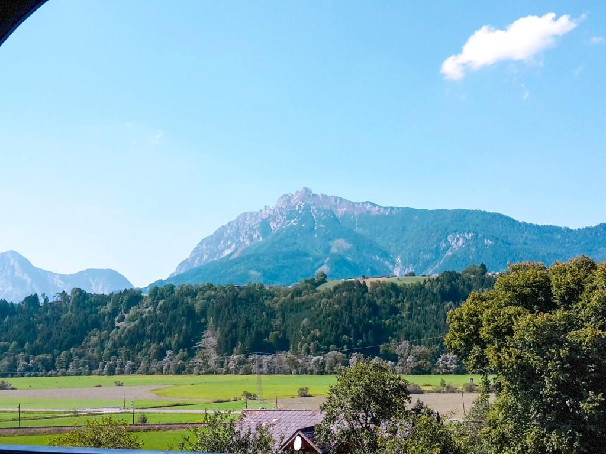
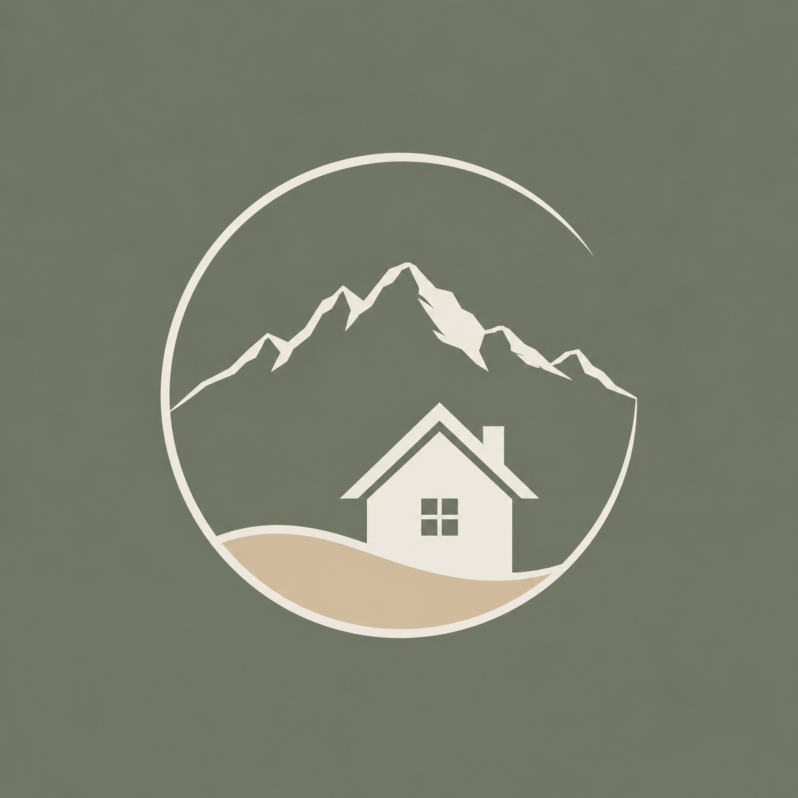
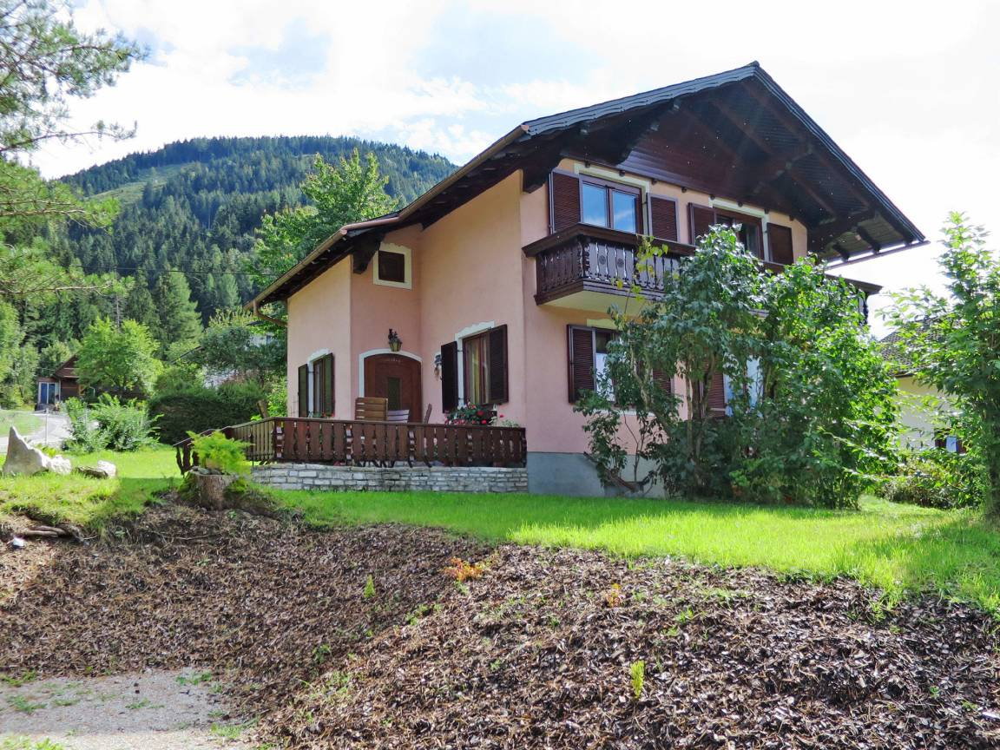
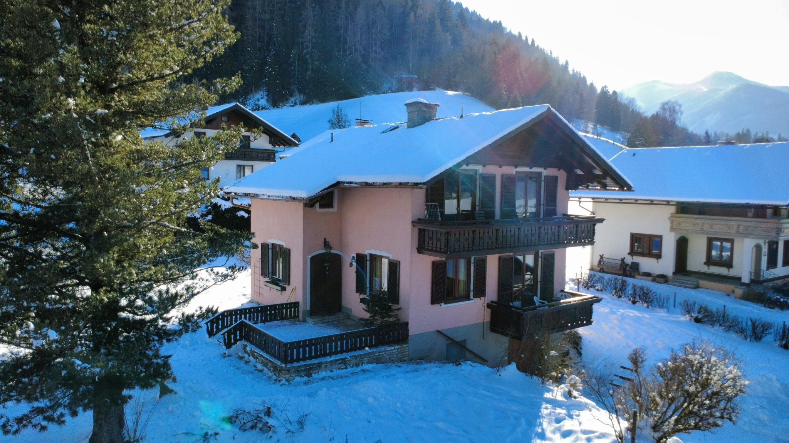
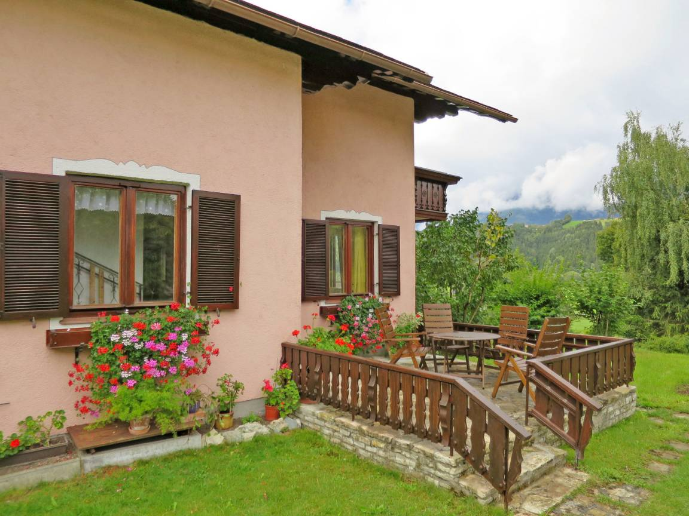
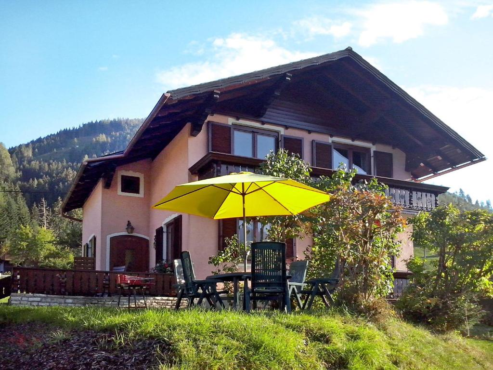
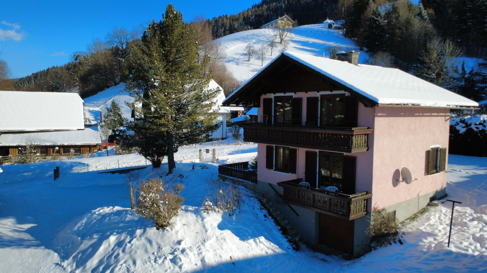
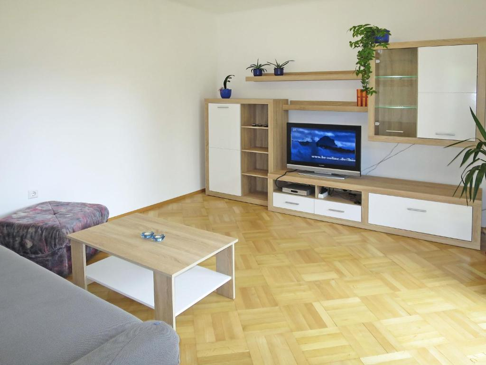

01
Wandern & Berge
Almen, Seen, Gipfel und familienfreundliche Wege rund um Öblarn und die Sölktäler.

Ferienhaus LuxDein Rückzugsort im EnnstalÖblarn · Steiermark · Österreich
Dein Rückzugsort im Ennstal
Ankommen. Durchatmen. Loslassen.
Zwischen Schladming, Dachstein und dem Naturpark Sölktäler liegt das Ferienhaus Lux ruhig im Grünen. Ein unkomplizierter Rückzugsort für Familien, Freunde und alle, die draußen mehr erleben und drinnen zur Ruhe kommen möchten.
Mehr über das Ferienhaus →

Das Ferienhaus
Das freistehende Landhaus verbindet gemütliches Wohnen mit einem großzügigen Garten und einer idealen Ausgangslage für Sommer- und Wintererlebnisse im Ennstal.
Sommer rund ums Ferienhaus
Vom ruhigen Spaziergang bis zum Gipfeltag – das Ennstal bietet Naturerlebnisse in alle Richtungen.

01
Almen, Seen, Gipfel und familienfreundliche Wege rund um Öblarn und die Sölktäler.

02
Frühstück im Grünen, entspannte Nachmittage und gemeinsame Abende auf der Terrasse.

03
Badeseen, Schluchten, regionale Küche und Tagesausflüge für jedes Wetter.

01
Mehrere Skigebiete liegen gut erreichbar zwischen Schladming-Dachstein, Hauser Kaibling und Planneralm.
02
Verschneite Wege, klare Bergluft und ruhige Tage abseits der Pisten.

03
Nach einem Tag im Schnee wartet ein warmes Haus mit viel Platz für gemeinsame Abende.
Einblicke
„Besonders geschätzt werden die ruhige Lage, die Aussicht und der viele Platz für gemeinsame Urlaubstage.“Alle Google-Bewertungen öffnen ↗
Einzelne Rezensionen können hier später wortgetreu ergänzt werden, sobald die Texte oder Screenshots vorliegen.
Lage & Entfernungen
Das Ferienhaus liegt im Ortsteil Bach, rund drei Kilometer von Öblarn und Stein an der Enns entfernt.
Eure Auszeit wartet